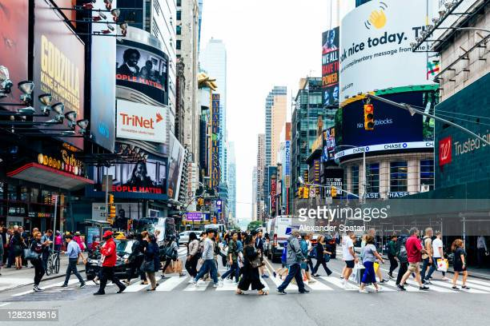

New York City is made up of five boroughs which include Queens, Manhattan, Brooklyn, the Bronx, and Staten Island. The city is the home of approximately 8 million people. In 1876, France gifted the City of New York what is known as the Statue of Liberty, which is currently located on Ellis Island commonly visited by tourists. However, it took 10 years to assemble and therefore wasn’t unveiled until 1886. Another tourist destination is Times Square. Times Square is commonly known for the big buildings, Broadway shows, and bright neon signs. This famous location was named after The New York Times after the Times moved to that location. Prior to that, it was named Longacre Square. New York City is also known for its bridges that connect the boroughs and allow ease of transportation.
New York City is very popular for the variety of great food it has. Some of the top food items in NYC include:
The Scenery in NYC
While the view in the city is beautiful, below is a busy street in NYC
